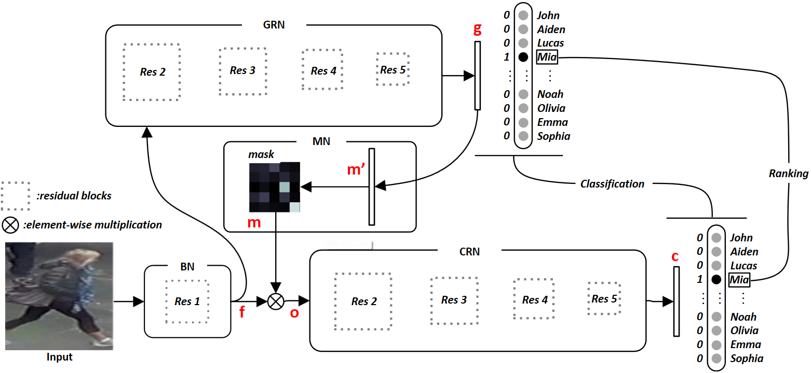

|  |
Guodong Ding1, Salman Khan2, Zhenming Tang1 and Fatih Porikli2
1Nanjing Univerisity of Science and Technology, 2Australian National University
Person re-identification aims at establishing the identity of a pedestrian from a gallery that contains images of people obtained from a multi-camera system, which has many applications in video surveillance for public security and safety. Many challenges such as occlusions, drastic lighting and pose variations across the camera views, and noise make this task highly challenging. While most approaches focus on learning features and metrics to derive better representations, we hypothesize that both local and global contextual cues are crucial for an accurate identity matching.
To this end, we propose a Feature Mask Network (FMN) that takes advantage of ResNet high-level features to predict a feature map mask and then imposes it on the low-level features to dynamically re-weight different object parts for a complementary feature representation. This serves as an attention mechanism by allowing the network to focus on local details selectively. We frame the network training as a multi-task objective optimization, which further improves the learned feature descriptions. We conduct experiments on Market-1501, DukeMTMC-reID and CUHK03 datasets, where the proposed approach respectively achieves significant improvements and competitive results when compared to the state-of-the-art.
Files: [journal]
Citation:
@article{ding2019feature,
title={Feature Mask Network for Person Re-identification},
author={Ding, Guodong and Khan, Salman and Tang, Zhenmin and Porikli, Fatih},
journal={Pattern Recognition Letters},
year={2019}
}